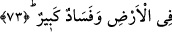

mîras konusunda yabancılardan daha çok hak sâhibidirler.
Hâsılı başlangıçta mirasçı olma, yalnız akrabâlığa göre değil hicret ve nusretle
(Muhacir-Ensar olmakla) sabit oluyordu. Mesela bir muhacirin Medîne’de
muhâcirlerden bir velisi yoksa ona ensardan olan kardeşi vâris oluyordu. Muhacir birisi
olmadan kendi müslüman yakını ile onun arasında veraset cerayan etmiyordu. Bu durum
Mekke’nin fethine kadar böyle devam etti. Mekke fethedildikten sonra ise hicret farîzası
düştüğü için artık mirasta akrabalık esas alındı.
“
” kelimesi “
” kelimesinin çoğuludur. “Velî” kelimesi, yakınlık anlamındaki
“
” kökündendir. Sanki âyette “İşte onlar birbirlerinin yakını ve akrabalarıdır. Îman
etmeyenlerle ya da îman edip hicret etmeyenlerle onların arasında yakınlık yoktur.”
buyurulmaktadır. Nitekim Allah Teâlâ âyetin devamında şöyle buyuruyor:
“İman edip” diğer müminler gibi “hicret etmeyenlerle hicret edinceye kadar sizin
dostluğunuz yoktur.” yani, en yakın akrabanız da olsalar size mirasda hak sâhibi
olamazlar.
Allah Teâlâ, hicret etmeyen müminin diğer müminlerle arasındaki velâyet bağının
kopmuş bulunduğunu beyan edince, bu durumda olan müminin kâfirlerle olduğu gibi
müminlerle bağının tamâmen koptuğu vehmi ortaya çıktı. Bunun üzerine şöyle buyurarak
bu vehmi izâle etti:
“Fakat” hicret etmeyen müminler “din uğrunda yardım isterlerse, onlara yardım
etmeniz gerekir.” yani din konusunda onlara düşmanlık besleyenlere karşı onlara
yardım etmek üzerinize vâcibdir.
“Yalnız, aranızda anlaşma bulunan bir topluma karşı” onlara yardım etmeniz
“müstesnâ.” yani ancak onların harp halinde olduğu bir toplulukla aranızda yapılmış
bir anlaşma varsa o zaman size düşen ahde vefadır. Onlarla harp etmeniz doğru olmaz.
Böyle bir halde hicret etmemiş müminlere yardım etmeniz vacip olmaz. Ancak savaş
yoluyla olmasa da başka bir şekilde aralarını düzeltmeye çalışmak gerekir.
“Allah yaptıklarınızı hakkıyla görücüdür.” Durum böyle olunca cezâsına uğramamak
için O’nun emrine muhalefet etmeyin.
73. İnkar edenler birbirlerinin dostlarıdır. Eğer siz böyle yapmazsanız
yeryüzünde fitne ve büyük bir fesad çıkar.
“İnkar edenler birbirlerinin dostlarıdır.” Miras konusunda birbirlerinin velîleridir.
Âyette kâfirler arasında da dostluk ve mîras konusunda velâyet bulunduğu ifade
edilmektedir. Halbuki kâfirler amelî hükümlerle muhatap değillerdir. Mefhum-i muhalif
yoluyla bu sözden murad, müslümanları arada akrabalık bağı bulunsa bile onlarla